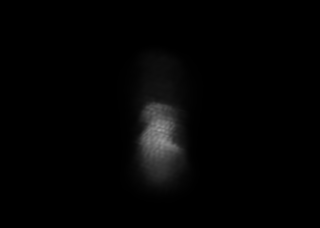

Exact smoke body under matched Beer-Lambert optics
R160 step 45. Every role uses the same physical-body mass, camera, finite volume, coefficient 0.731, and 1 - exp(-optical depth). Images use display-only 8x exposure; metrics remain linear.
This page tests representation, not production-compositor parity. Compare tongue shape, cavities, interior folds, horizontal bands, and granular support.
Dense directExact trilinear physical-body grid
Connected sparse gridAll positive cells plus six-neighbor identity
Analytic Gaussian50,560 R2 full-covariance moments; finite-ray integral
NativeCamera 52d62666...

Reference representation. Broad bent tongue and asymmetric bright interior fold remain connected.

Byte-identical to dense. 2,993,279 positive cells; one component; no support or optical error.

Matched mass and optics, but horizontal bands and a stippled central core replace the connected fold. Peak-local error is 19.60% of target peak.
Elevated +35Camera 31fff60f...

Reference representation. Lateral fold and cavity boundary remain legible from the hostile view.

Byte-identical to dense under the same elevated rays.

The lateral fold contracts into granular central support. Peak-local error is 19.81% of target peak.